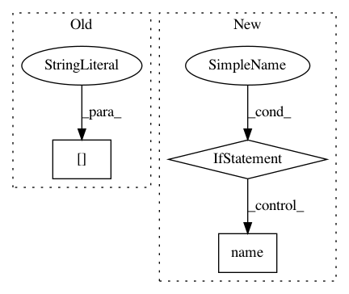

01b4ec3f531e07b8c4a32a13288c963ad8b4b843,server/website/website/db/base/parser.py,BaseParser,convert_dbms_metrics,#BaseParser#Any#Any#Any#,188
Before Change
metric_data[target_objective] = metric_data[self.target_metric(target_objective)]
else:
// default
metric_data["throughput_txn_per_sec"] = \
metric_data[self.target_metric(target_objective)]
return metric_data
After Change
for name, metadata in self.numeric_metric_catalog_.items():
value = metrics[name]
if metadata.vartype == VarType.INTEGER:
converted = float(self.convert_integer(value, metadata))
elif metadata.vartype == VarType.REAL:
converted = self.convert_real(value, metadata)
else:
raise ValueError(
("Found non-numeric metric "{}" in the numeric "
"metric catalog: value={}, type={}").format(
name, value, VarType.name(metadata.vartype)))
if metadata.metric_type == MetricType.COUNTER:
assert isinstance(converted, float)
base_metric_data[name] = converted
metric_data[name] = converted / observation_time
In pattern: SUPERPATTERN
Frequency: 3
Non-data size: 3
Instances
Project Name: cmu-db/ottertune
Commit Name: 01b4ec3f531e07b8c4a32a13288c963ad8b4b843
Time: 2019-10-14
Author: dvanaken@cs.cmu.edu
File Name: server/website/website/db/base/parser.py
Class Name: BaseParser
Method Name: convert_dbms_metrics
Project Name: cmu-db/ottertune
Commit Name: 01b4ec3f531e07b8c4a32a13288c963ad8b4b843
Time: 2019-10-14
Author: dvanaken@cs.cmu.edu
File Name: server/website/website/db/myrocks/parser.py
Class Name: MyRocksParser
Method Name: convert_dbms_metrics
Project Name: comic/grand-challenge.org
Commit Name: 6c898957598010efa06f5ac006a78f852a37e56b
Time: 2018-10-24
Author: jamesmeakin@gmail.com
File Name: app/grandchallenge/core/templatetags/grandchallenge_tags.py
Class Name: ProjectStatisticsNode
Method Name: _get_map